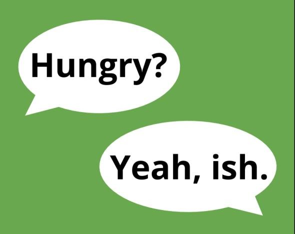

-ISH

We can add it to some adjectives to mean ‘not precisely’ use it as a word on its own – usually to answer questions.
We can also add it to a number to mean it’s not precisely that number. For example, time or age.
Examples
I didn’t love the film, but it was goodish It was OK.
When she asked me if I was OK, I just said ‘ish’. I think she knows I’m not happy.
I might be a little late to the meeting, but I should arrive by about 5ish